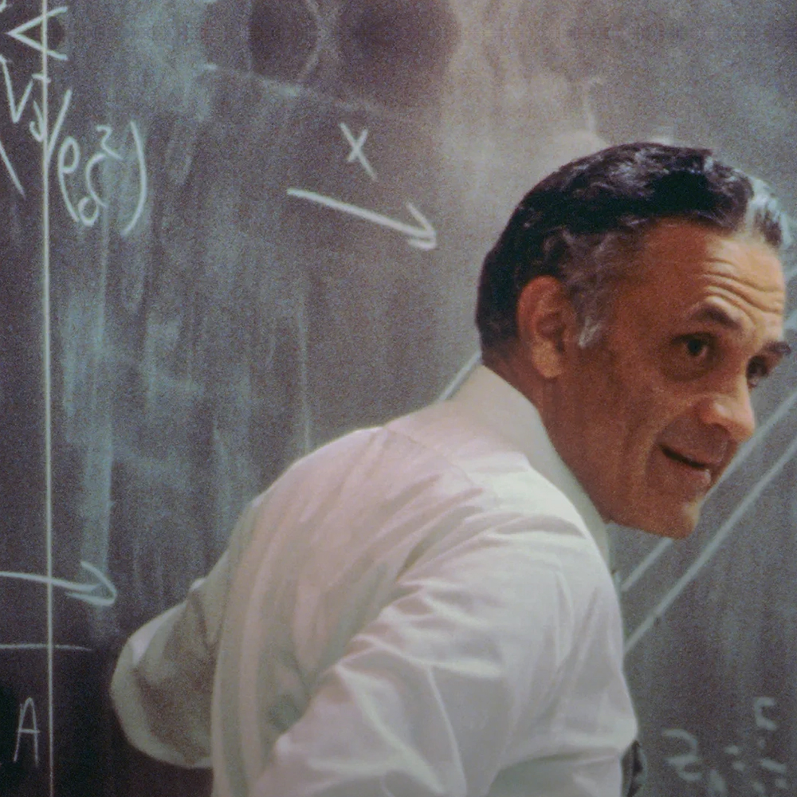
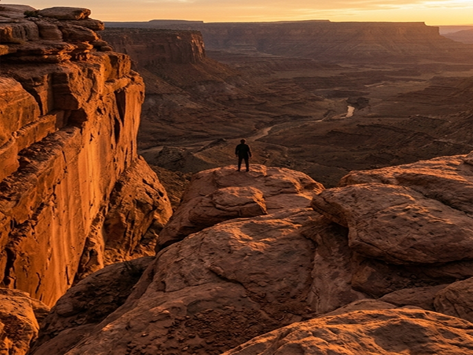
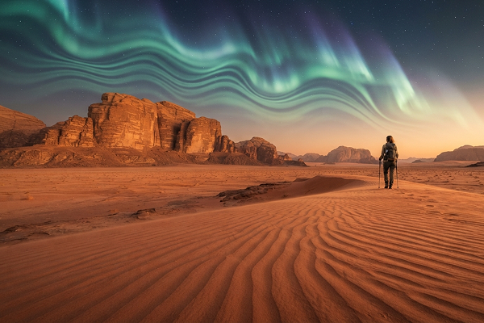
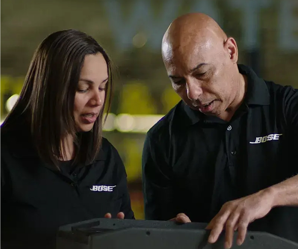

“상상력을 잃지 마세요. 항상 더 나은 것을 꿈꾸고,
그 목표에 도달할 방법을 생각해보세요.”
“Never lose your sense of wonder. Always dream of something better,
and think of ways to achieve it.”
- Amar G. Bose
“좋은 소리와 완벽한 소리, 그 사이에서
60년을 보냈습니다”
소리를 향한 60년의 여정
Six Decades of Sound
Bose는 열정적인 엔지니어, 연구자, 음악 애호가들로 구성된 그룹으로, 더 나은 사운드를 위해 끊임없이 탐구합니다.

‘소리’는, 세상을 움직이는 진짜 힘입니다.
Sound is the true force that moves the world.

소리는 우리를 변화시키고, 감동시키며, 삶에 생동감을 불어넣습니다.
Sound transforms us, moves us, and breathes life into every moment.
우리는 언제나 ‘본래 의도된 소리’를 가장 순수하게 전달하고자 노력해왔습니다.
We’ve always strived to deliver sound exactly as it was intended to be heard.

지속 가능한 미래를 향해
Toward a Sustainable Future
지속가능성은 Bose의 본질과 가치를 반영합니다.
Sustainability reflects the essence and values of Bose